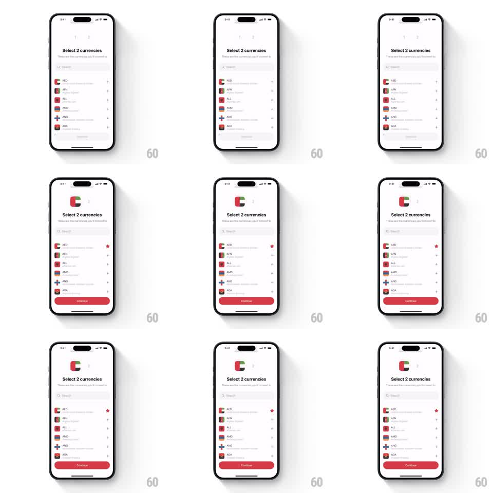

Media
Frame-by-frame

Rebuild this interaction 1:1: the currency picker's flag morph - tapping a row's add button flies its flag into the numbered slot at the top, where it lands as the selected currency chip.

Rebuild this interaction 1:1: the currency picker's flag morph - tapping a row's add button flies its flag into the numbered slot at the top, where it lands as the selected currency chip. ## Integration Integration: stack-agnostic spec - springs given as stiffness/damping, timed motions as duration + curve; map every value to your framework and animation library of choice. ## Scene "Select 2 currencies" screen: two numbered placeholder slots up top, a search field, and a list of currency rows (flag, code, name, add button). A red Continue button appears once both slots fill. ## Motion spec Pattern: shared-element flag flight, ~600ms. - Tapping a row's add button detaches its flag: the flag lifts from the row and flies along a slight arc to the first empty top slot (spring stiffness 240 damping 20), scaling from list size to slot size mid-flight. - The slot's number fades out as the flag lands; the flag settles with a small bounce and becomes the slot's chip. - The source row's add button turns into a red star marker (200ms crossfade) and the row dims slightly. - When the second flag lands, the Continue button slides up from the bottom (spring stiffness 300 damping 22). - Tapping a filled slot reverses the flight: the flag returns to its row and the number fades back in. ## Calibration - The flight is a shared element - one flag, two endpoints; a fade-out/fade-in pair reads as a cheat. - The arc's apex clears the search field; a straight line would clip through it. ## Reduced motion Flag fades into the slot; button slides up without spring. ## Don't miss - Slot order is fill order (first tap takes slot 1) - never reorder after the fact. - The flag keeps its aspect during the scale; squashing reads as a layout bug.